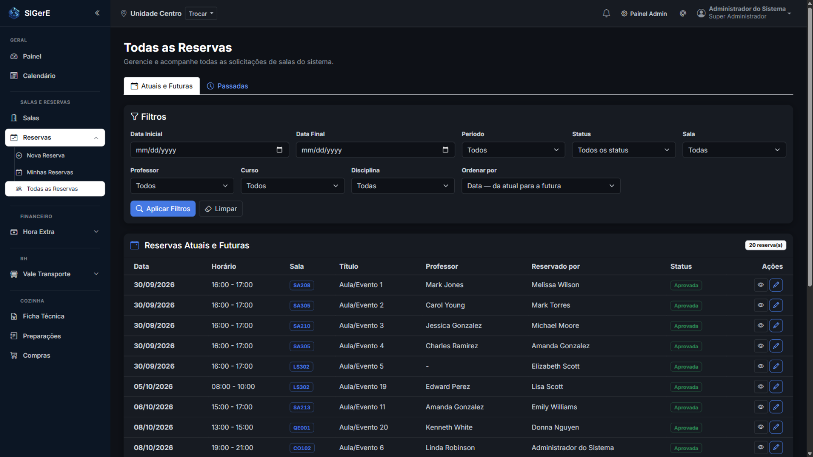

- 1
Reservas → Nova Reserva
Escolha a sala, a data e o horário.
- 2
Complete os dados
Informe curso, disciplina e professor.
- 3
O sistema confere tudo na hora
Verifica conflito de sala e de professor antes de salvar.
SIGerE — Todas as Reservas

Aprovada
Sala e professor livres — a reserva já vale e aparece no calendário.
Pendente
O professor já tem reserva nesse horário — um gestor precisa aprovar.
Impedida
Sala ocupada, domingo ou feriado — o sistema bloqueia o pedido.